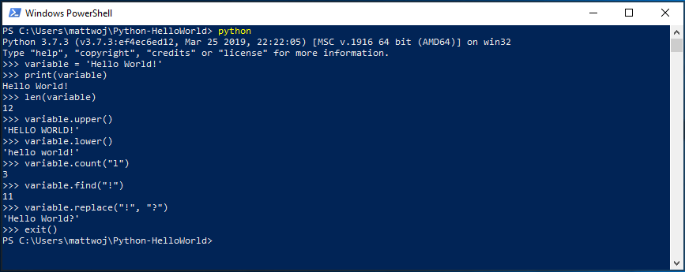
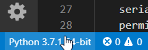
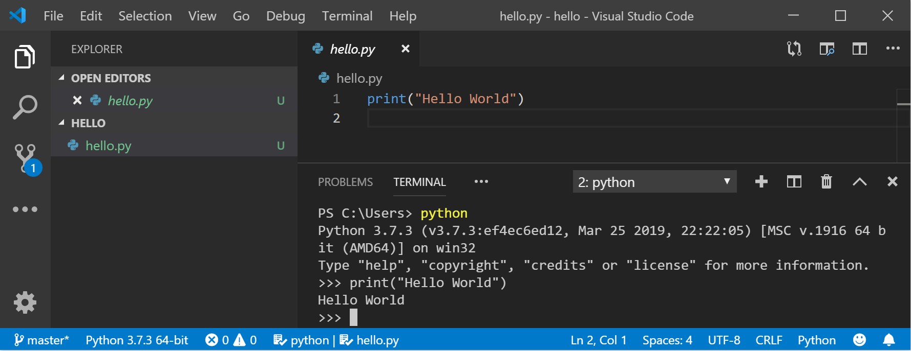
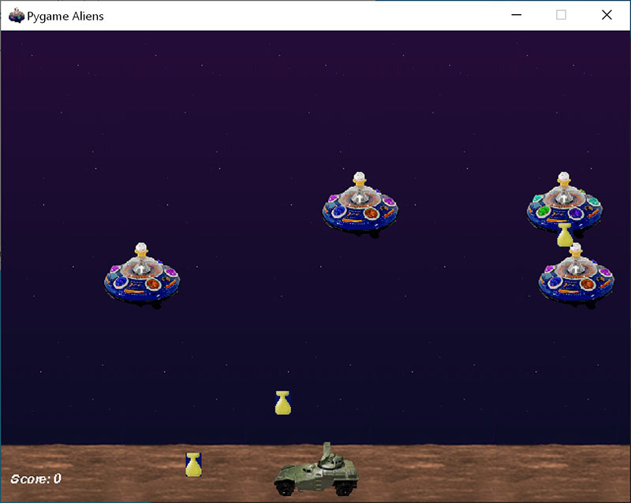
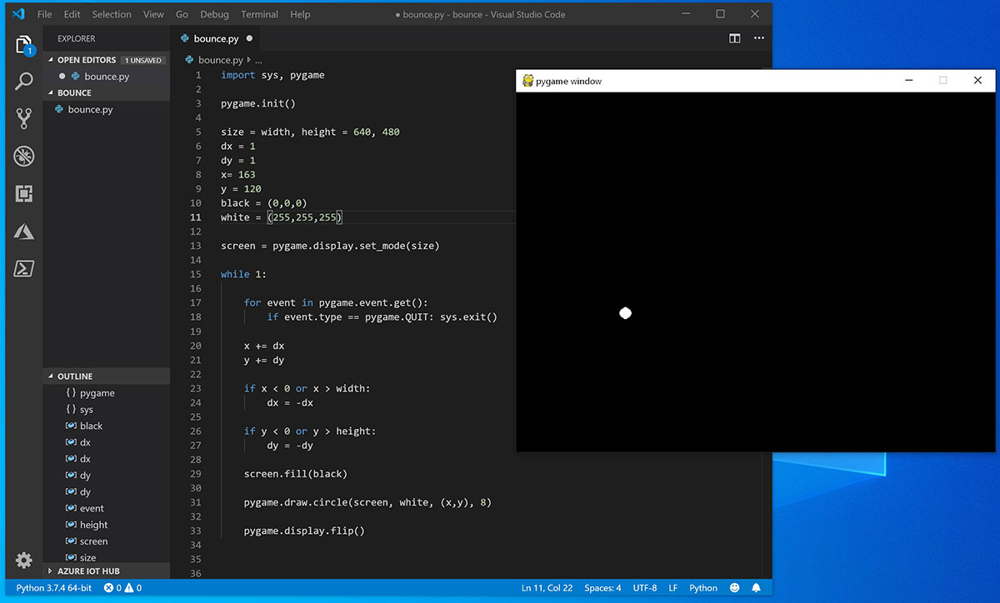

Get started using Python on Windows for beginners
For beginners interested in learning Python using Windows, we recommend choosing between these two setup paths:
- Set up your Python development environment using a winget configuration file
- Manually set up your Python development environment
Set up your Python development environment using a WinGet Configuration file
Winget Configuration files include all of the instructions needed to install requirements and setup your machine for a specific project. To use Microsoft's Beginner Python project WinGet Configuration setup file, follow the steps below:
Download the configuration file by opening this link and selecting "Raw file content > Download" (three dots menu on top-right): Winget Configuration: learn_python.winget.
To run the file, double-click the downloaded configuration file (the first time you will need to select the "Windows Package Manager Client" app to open and run the file) or you can open Powershell in Windows Terminal and enter the following command:
winget configure -f <path to learn_python.winget file>The file path will look something like
winget configure -f C:\Users\<your-name>\Downloads\learn_python.winget.Once the configuration file begins running, you will see the setup steps listed in a terminal window, including the project requirements that will be installed. You will then need to confirm that you have reviewed these configuration updates and confirm that you would like to proceed by selecting [Y] Yes or [N] No.
Once you proceed, the project requirements will be installed and report whether the configuration has been successfully applied.
Your machine is now setup to Learn Python!
To confirm, check what version of Python is installed on your machine now by entering the command: python --version.
Manually set up your Python development environment
To setup your Python development environment manually, rather than using a winget configuration file, you will need to:
- Install Python
- Install Visual Studio Code
- Install the Visual Studio Code extension for Python
Install Python: There are multiple versions of Python available to install (based on updates that have been made to the coding language over time). You will first need to determine which version of Python you need. You can reference the versions of Python currently supported at Status of Python versions | Python Developer's Guide. We recommend either using a modern, supported version, or matching the version of the whatever Python project that you plan to contribute to. For this tutorial, we recommend that you use the Microsoft Store to install Python.
- Install Python 3 using Microsoft Store - select the most recent version available and then "Download". Installing Python via the Microsoft Store uses Python 3 and handles set up of your PATH settings for the current user (avoiding the need for admin access), in addition to providing automatic updates. Once Python has completed the downloading and installation process, open PowerShell in Windows Terminal and enter the command:
python --versionto confirm the Python version that has been installed on your machine.
If you are using Python on Windows for web development, we recommend a different set up for your development environment. Rather than installing directly on Windows, we recommend installing and using Python via the Windows Subsystem for Linux.
If you're interested in automating common tasks on your operating system, see our guide:
For some advanced scenarios (like needing to access/modify Python's installed files, make copies of binaries, or use Python DLLs directly), you may want to consider downloading a specific Python release directly from python.org or installing an alternative, such as Anaconda, Jython, PyPy, WinPython, IronPython, etc. We only recommend this if you are a more advanced Python programmer with a specific reason for choosing an alternative implementation.
Install Visual Studio Code: Visual Studio Code is a code editing tool, sometimes called an Integrated Development Environment, or IDE. Visual Studio Code provides features such as GitHub Copilot (an AI-powered tool that provides coding suggestions), IntelliSense (a code completion aid), Linting (helps avoid making errors in your code), Debug support (helps you find errors in your code after you run it), Code snippets (templates for small reusable code blocks), and Unit testing (testing your code's interface with different types of input).
Install the Visual Studio Code extension for Python: Visual Studio Code offers "extensions" allowing you to add on support features which extend support for whatever language or tools you are working with. In this case, the Python extension adds Python-specific support for code formatting, IntelliSense code completion suggestions, debugging, linting, refactoring, etc.
Hello World tutorial for some Python basics
Python, according to its creator Guido van Rossum, is a “high-level programming language, and its core design philosophy is all about code readability and a syntax which allows programmers to express concepts in a few lines of code.”
Python is an interpreted language. In contrast to compiled languages, in which the code you write needs to be translated into machine code in order to be run by your computer's processor, Python code is passed straight to an interpreter and run directly. You just type in your code and run it. Let's try it!
With your PowerShell command line open, enter
pythonto run the Python 3 interpreter. (Some instructions prefer to use the commandpyorpython3, these should also work). You will know that you're successful because a >>> prompt with three greater-than symbols will display.There are several built-in methods that allow you to make modifications to strings in Python. Create a variable, with:
variable = 'Hello World!'. Press Enter for a new line.Print your variable with:
print(variable). This will display the text "Hello World!".Find out the length, how many characters are used, of your string variable with:
len(variable). This will display that there are 12 characters used. (Note that the blank space it counted as a character in the total length.)Convert your string variable to upper-case letters:
variable.upper(). Now convert your string variable to lower-case letters:variable.lower().Count how many times the letter "l" is used in your string variable:
variable.count("l").Search for a specific character in your string variable, let's find the exclamation point, with:
variable.find("!"). This will display that the exclamation point is found in the 11th position character of the string.Replace the exclamation point with a question mark:
variable.replace("!", "?").To exit Python, you can enter
exit(),quit(), or select Ctrl-Z.

Hope you had fun using some of Python's built-in string modification methods. Now try creating a Python program file and running it with Visual Studio Code.
Hello World tutorial for using Python with VS Code
The VS Code team has put together a great Getting Started with Python tutorial walking through how to create a Hello World program with Python, run the program file, configure and run the debugger, and install packages like matplotlib and numpy to create a graphical plot inside a virtual environment.
To run Python code, you must tell VS Code which interpreter to use. Because you've already installed the Python extension, you can select a Python interpreter by opening the Command Palette (Ctrl+Shift+P), start typing the command Python: Select Interpreter to search, then select the command. You can also use the Select Python Environment option on the bottom Status Bar if available (it may already show a selected interpreter). The command presents a list of available interpreters, including virtual environments. Just choose the first on the list unless you have a reason for a different desired interpreter, see Configuring Python environments.

Once you've chosen the interpreter, let's try using it with the VS Code built-in terminal:
To open the terminal in VS Code, select View > Terminal, or alternatively use the shortcut Ctrl+` (using the backtick character). The default command line is PowerShell.
Inside your VS Code terminal, open Python by simply entering the command:
pythonTry the Python interpreter out by entering:
print("Hello World"). Python will return your statement "Hello World".
In the terminal, create an empty folder called "hello", navigate into this folder, and open it in VS Code using the code below:
mkdir hello cd hello code .Once VS Code opens, displaying your new hello folder in the left-side Explorer window, open a command line window in the bottom panel of VS Code by pressing Ctrl+` (using the backtick character) or selecting View > Terminal. By starting VS Code in a folder, that folder becomes your "workspace". VS Code stores settings that are specific to that workspace in .vscode/settings.json, which are separate from user settings that are stored globally.
Continue the tutorial in the VS Code docs: Create a Python Hello World source code file.
What is PIP?
A package manager is a tool that automates the process of installing, upgrading, configuring, and removing software packages. Python's ecosystem is rich, with thousands of packages available on the Python Package Index (PyPI). Pip is the standard package manager program that is included with Python. Pip allows you to install and manage additional packages that are not part of the Python standard library. To confirm that you also have pip available to install and manage packages, enter pip --version
To install a package using pip, you can use the command:
pip install <package_name>
Try replacing <package_name> with the name of a package from https://pypi.org/. For example, you can try installing pip upgrades with the command: pip install --upgrade pip
One of the strengths of pip is its ability to create a requirements.txt file, which lists all the dependencies of a project. This file can be used to replicate the environment on another machine. Use the command pip freeze > requirements.txt to create a file that will list all the installed packages in your current development environment and their versions. To run this requirements file in order to set up a new machine with the same environment, you would run pip install -r requirements.txt.
Create a simple game with Pygame

Pygame is a popular Python package for writing games - encouraging students to learn programming while creating something fun. Pygame displays graphics in a new window, and so it will not work under the command-line-only approach of WSL. However, if you installed Python via the Microsoft Store as detailed in this tutorial, it will work fine.
Once you have Python installed, install pygame from the command line (or the terminal from within VS Code) by typing
python -m pip install -U pygame --user.Test the installation by running a sample game :
python -m pygame.examples.aliensAll being well, the game will open a window. Close the window when you are done playing.
Here's how to start writing your own game.
Open PowerShell (or Windows Command Prompt) and create an empty folder called "bounce". Navigate to this folder and create a file named "bounce.py". Open the folder in VS Code:
mkdir bounce cd bounce new-item bounce.py code .Using VS Code, enter the following Python code (or copy and paste it):
import sys, pygame pygame.init() size = width, height = 640, 480 dx = 1 dy = 1 x= 163 y = 120 black = (0,0,0) white = (255,255,255) screen = pygame.display.set_mode(size) while 1: for event in pygame.event.get(): if event.type == pygame.QUIT: sys.exit() x += dx y += dy if x < 0 or x > width: dx = -dx if y < 0 or y > height: dy = -dy screen.fill(black) pygame.draw.circle(screen, white, (x,y), 8) pygame.display.flip()Save it as:
bounce.py.From the PowerShell terminal, run it by entering:
python bounce.py.
Try adjusting some of the numbers to see what effect they have on your bouncing ball.
Read more about writing games with pygame at pygame.org.
Use AI to enhance the game with additional features
You can use AI tools, such as GitHub Copilot, to generate code that updates the bouncing ball game with new interactive features, improved behaviors, and smoother animations. You can customize the prompt to suit your requirements.
The following text shows an example prompt for Copilot Chat:
Update the pygame bouncing ball code to:
- Add a vertical wall in the center that the ball bounces off
- Ensure the ball can bounce off the center wall and continue moving, not get stuck next to it
- Cycle through different colors each time the ball bounces
- Reduce movement speed from 1 to 0.5 pixels per frame
- Add frame rate control for 60 FPS
GitHub Copilot is powered by AI, so surprises and mistakes are possible. For more information, see Copilot FAQs.
Resources for continued learning
We recommend the following resources to support you in continuing to learn about Python development on Windows.
- Microsoft Dev Blogs: Python: Read the latest updates about all things Python at Microsoft.
Working with Python in VS Code
Editing Python in VS Code: Learn more about how to take advantage of VS Code's autocomplete and IntelliSense support for Python, including how to customize their behavior... or just turn them off.
Linting Python: Linting is the process of running a program that will analyse code for potential errors. Learn about the different forms of linting support VS Code provides for Python and how to set it up.
Debugging Python: Debugging is the process of identifying and removing errors from a computer program. This article covers how to initialize and configure debugging for Python with VS Code, how to set and validate breakpoints, attach a local script, perform debugging for different app types or on a remote computer, and some basic troubleshooting.
Unit testing Python: Covers some background explaining what unit testing means, an example walkthrough, enabling a test framework, creating and running your tests, debugging tests, and test configuration settings.